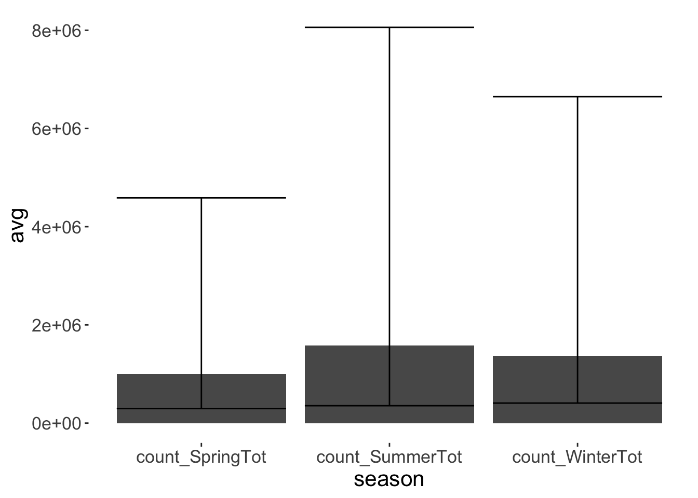
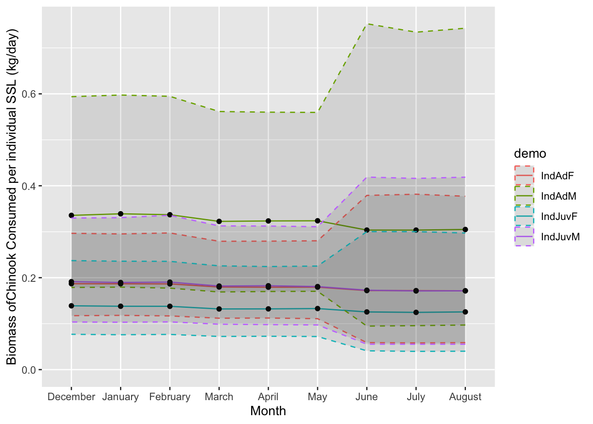
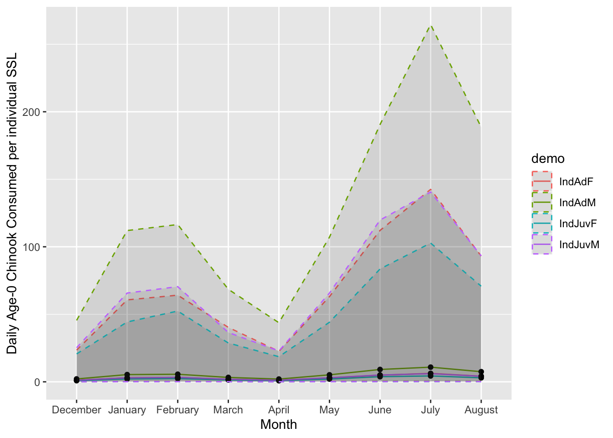

Code
library(dplyr)
library(colorspace)
library(viridis)
library(zoib)
library(ggplot2)
library(lemon)
library(knitr)
library(tidyr)Biomass of Chinook salmon consumed by Steller sea lions between December 2020-August 2021 along the northwest coast of Washington.
First, we describe prey consumption models for Steller sea lions (SSL) adapted from @scordino2022. This model was developed to determine the biomass consumed by Steller sea lions between 2010-2013 along the northwest coast of Washington using hard parts identification of prey items within scat. Thus, we use many of the same parameters, however, abundance parameters changed based on updated counts of Steller sea lions in the region. Using this model, we first estimate the total biomass consumed by these Steller sea lions.
Second, we used new DNA metabarcoding diet data to estimate the seasonal proportion of Chinook within Steller sea lion diet. Given that the data are zero-inflated, proportion data, we use ZOIB modeling (described in both the html and the rmd file titled “ZOIB model”, as well as in @nelson2021a) to determine seasonal proportions of Chinook consumed .
Third, we used the ZOIB modeling protocol to estimate the seasonal diet proportion of age-0 Chinook salmon consumed to determine the biomass and the number of age-0 Chinook salmon consumed by Steller sea lions along the northwest coast of Washington State. Then, we estimate the number of individual age-0 Chinook salmon consumed by Steller sea lions given previously used length distributions found in @chasco2017.
library(dplyr)
library(colorspace)
library(viridis)
library(zoib)
library(ggplot2)
library(lemon)
library(knitr)
library(tidyr)This section describes the distributions used to determine the daily consumption (in kilograms) of Steller sea lions based on their age, and sex. Parameters are derived from @winship2006; @winship2001, and the overall biomass model presented first in @scordino2022.
Percent body weight consumed based on body weight estimates and sex are the same as those used in “Dietary niche overlap and prey consumption estimates for Steller sea lion and California sea lion in northwest Washington 2010-2013” @scordino2022 derived from . Percent body weight consumed determined using either normal distribution or uniform distributions.
#Female P
FLarge <- rnorm(1,0.05,0.01)
FMed <- runif(1,0.06,0.07)
FMedSm <- runif(1,0.07,0.08)
FSmall <- runif(1,0.08,0.09)
#Male P
MLarge <- runif(1,0.03,0.04)
MMed <- rnorm(1,0.04,0.01)
MMedSm <- runif(1,0.05,0.06)
MSmall <- runif(1,0.06,0.07)
MVSmall <- runif(1,0.08,0.09)Functions used to determine the daily consumption of prey by SSL is defined in @scordino2022: “Formulas for estimating the daily consumption of a randomly drawn juvenile female juvenile male, adult female, and adult male using the consumption of body weight parameters defined above and the uniform distribution of reported weight at age for each age and sex class as reported in @winship2001. Juvenile weights are for sea lions ages 1 to 5. Juvenile females use non-pregnant 5 year old weight as the maximum weight for the category. Adults use age classes of 5 up to maximum growth from @winship2001.”
## Individual daily consumption juvenile female (I)
IndDailyConsumptionJuvF<- function()
{
JuvF <- runif(1,89,195)
if(JuvF > 194){JuvF*FMed}
if(JuvF > 152){JuvF*FMedSm}
if(JuvF > 89){JuvF*FSmall}
}
## Individual daily consumption adult female (I)
IndDailyConsumptionAdF<- function()
{
AdFemale <- runif(1,195,305)
if(AdFemale > 223){AdFemale*FLarge}
if(AdFemale > 195){AdFemale*FMed}
}
## Individual daily consumption juvenile male (I)
IndDailyConsumptionJuvM<- function()
{
JuvM <- runif(1,125,286)
if(JuvM > 182){JuvM*MSmall}
if(JuvM > 125){JuvM*MVSmall}
}
## Individual daily consumption adult male (I)
IndDailyConsumptionAdM<- function()
{
AdMale <- runif(1,286,681)
if(AdMale > 623){AdMale*MLarge}
if(AdMale > 455){AdMale*MMed}
if(AdMale > 310){AdMale*MMedSm}
if(AdMale > 286) {AdMale*MSmall}
}Counts are from surveys conducted from 2020-2021 data counts only.
Count data was only used from days that included all local haulouts surveyed. Raw data for the counts are available from Scordino and Akmajian 2021. Abundance functions were modeled using a negative binomial distribution.
Table 1: Negative binomial parameters for modeling Steller sea lion abundance along the northwest coast of Washington State between December 2020-August 2021.
| Season | Mean | Size | n |
|---|---|---|---|
| Winter | 976.33 | 36.34 | 3 |
| Spring | 888.29 | 32.10 | 7 |
| Summer | 969.77 | 25.80 | 13 |
#Winter Steller sea lion abundance
WinAbund <- function()
{
rnbinom(n=1, mu=976.3333, size=36.34341)
}
SprAbund <- function()
{
rnbinom(n=1, mu=888.2857, size=32.07886)
}
SumAbund <- function()
{
rnbinom(n=1, mu=969.7692, size=25.796)
}Correction factors are the same as correction factors used in @scordino2022,
Methods from @scordino2022 describe seasonal count correction factors as follows:
“Correction factors from Olesiuk 2018 were used assuming that the correction factor for fall and spring have the same CF as caculated for winter. This assumption is supported by the findings of Whitlock et al. 2020 of very low attendance in May and by the end of August that were similar to Olesiuk’s estimate for winter CF. Overall the correction factors from Olesiuk 2018 were similar to the estimates of Whitlock et al. 2020. These correction factors were for Steller sea lions. Olesiuk found that 36% of non-pups (SD=2.1%) were hauled out in fall, winter, and spring during the time window of 10:00 - 18:00 when our counts typically occurred. During summer Olesiuk found that 67.4% of non-pups (SD= 5.6%) were hauled out during survey time periods. Note that Olesiuk (2018) errored in reporting that 2.1% was the winter CV and 5.6% was the summer CV of the proportion of population hauled out; both should have read SD instead of CV (Personal communication Peter Olesiuk, 2021).”
WinSprFallCF <- function()
{
1/(rnorm(1,0.36,0.021))
}
SummerCF <- function()
{
1/rnorm(1,0.674,0.056)
}We assume that relative proportion of demographics has not changed from the initial estimates calculated for the model used in @scordino2022, as demographic counts were not performed for every survey in 2020-2021.
Methods from @scordino2022:
“Count data from Scordino and Akmajian (2021) were used to determine the proportion of the hauled out Steller sea lions that were adult male, adult female, and juvenile.”
Note: In contrast to abundance count data, demographic counts were obtained from all days 2010-2013 that had demographic data, and did not need to have all haulouts surveyed within a day.
Seasonal demographic functions modeled with beta distributions for each season for observed adult female, adult male and juvenile proportions.
Table 2: Beta distribution parameters for modeling demographic proportions for adult male, adult female and juvenile Steller sea lions along the northwest coast of Washington State. Demographic proportions obtained from @scordino2022, 2010-2013 demographic counts.
| Season | Avg F | Sd F | Avg J | Sd J | Avg M | Sd M | n |
|---|---|---|---|---|---|---|---|
| Spring | 0.379 | 0.099 | 0.426 | 0.098 | 0.195 | 0.071 | 11 |
| Summer | 0.261 | 0.055 | 0.408 | 0.055 | 0.330 | 0.071 | 9 |
| Winter | 0.390 | 0.104 | 0.406 | 0.046 | 0.205 | 0.074 | 4 |
The proportions of individuals hauled out of each demographic group is best modeled using a beta distribution. To calculate the beta distribution we first calculated the shape 1 and shape 2 of the distribution for each demographic group by season.”
##Observed demographic proportions
Mean_winter_j = 0.406 #Juvenile avg
sd_winter_j = 0.046 #Juvenile sd
Mean_winter_f = 0.390 #Female avg
sd_winter_f = 0.104 #Female sd
Mean_winter_m = 0.205 #Male avg
sd_winter_m = 0.074 #Male sd
## Beta distribution shapes
### Juvenile
Winter_j_shape1 <- (Mean_winter_j^2-Mean_winter_j^3-Mean_winter_j*sd_winter_j^2)/sd_winter_j^2
Winter_j_shape2 <- (Mean_winter_j-2*Mean_winter_j^2+Mean_winter_j^3-sd_winter_j^2+Mean_winter_j*sd_winter_j^2)/sd_winter_j^2
### Adult female
Winter_f_shape1 <- (Mean_winter_f^2-Mean_winter_f^3-Mean_winter_f*sd_winter_f^2)/sd_winter_f^2
Winter_f_shape2 <- (Mean_winter_f-2*Mean_winter_f^2+Mean_winter_f^3-sd_winter_f^2+Mean_winter_f*sd_winter_f^2)/sd_winter_f^2
### Adult male
Winter_m_shape1 <- (Mean_winter_m^2-Mean_winter_m^3-Mean_winter_m*sd_winter_m^2)/sd_winter_m^2
Winter_m_shape2 <- (Mean_winter_m-2*Mean_winter_m^2+Mean_winter_m^3-sd_winter_m^2+Mean_winter_m*sd_winter_m^2)/sd_winter_m^2
## Beta distribution functions for demographics
WinJuvDemo <- function()
{
rbeta(n=1,shape1=Winter_j_shape1,shape2=Winter_j_shape2)
}
WinFemDemo <- function()
{
rbeta(n=1,shape1=Winter_f_shape1,shape2=Winter_f_shape2)
}
WinMaleDemo <- function()
{
rbeta(n=1,shape1=Winter_m_shape1,shape2=Winter_m_shape2)
}##Observed demographic proportions
Mean_spring_j = 0.426
sd_spring_j = 0.098
Mean_spring_f = 0.379
sd_spring_f = 0.099
Mean_spring_m = 0.195
sd_spring_m = 0.071
#@# Beta distribution shapes
### Juvenile
Spring_j_shape1 <- (Mean_spring_j^2-Mean_spring_j^3-Mean_spring_j*sd_spring_j^2)/sd_spring_j^2
Spring_j_shape2 <- (Mean_spring_j-2*Mean_spring_j^2+Mean_spring_j^3-sd_spring_j^2+Mean_spring_j*sd_spring_j^2)/sd_spring_j^2
### Adult Female
Spring_f_shape1 <- (Mean_spring_f^2-Mean_spring_f^3-Mean_spring_f*sd_spring_f^2)/sd_spring_f^2
Spring_f_shape2 <- (Mean_spring_f-2*Mean_spring_f^2+Mean_spring_f^3-sd_spring_f^2+Mean_spring_f*sd_spring_f^2)/sd_spring_f^2
### Adult male
Spring_m_shape1 <- (Mean_spring_m^2-Mean_spring_m^3-Mean_spring_m*sd_spring_m^2)/sd_spring_m^2
Spring_m_shape2 <- (Mean_spring_m-2*Mean_spring_m^2+Mean_spring_m^3-sd_spring_m^2+Mean_spring_m*sd_spring_m^2)/sd_spring_m^2
### Beta distribution functions for demographics
SprJuvDemo <- function()
{
rbeta(n=1,shape1=Spring_j_shape1,shape2=Spring_j_shape2)
}
SprFemDemo <- function()
{
rbeta(n=1,shape1=Spring_f_shape1,shape2=Spring_f_shape2)
}
SprMaleDemo <- function()
{
rbeta(n=1,shape1=Spring_m_shape1,shape2=Spring_m_shape2)
}Mean_summer_j = 0.408
sd_summer_j = 0.055
Mean_summer_f = 0.261
sd_summer_f = 0.055
Mean_summer_m = 0.330
sd_summer_m = 0.071
#@# Beta distribution shapes
### Juvenile
summer_j_shape1 <- (Mean_summer_j^2-Mean_summer_j^3-Mean_summer_j*sd_summer_j^2)/sd_summer_j^2
summer_j_shape2 <- (Mean_summer_j-2*Mean_summer_j^2+Mean_summer_j^3-sd_summer_j^2+Mean_summer_j*sd_summer_j^2)/sd_summer_j^2
### female
summer_f_shape1 <- (Mean_summer_f^2-Mean_summer_f^3-Mean_summer_f*sd_summer_f^2)/sd_summer_f^2
summer_f_shape2 <- (Mean_summer_f-2*Mean_summer_f^2+Mean_summer_f^3-sd_summer_f^2+Mean_summer_f*sd_summer_f^2)/sd_summer_f^2
### male
summer_m_shape1 <- (Mean_summer_m^2-Mean_summer_m^3-Mean_summer_m*sd_summer_m^2)/sd_summer_m^2
summer_m_shape2 <- (Mean_summer_m-2*Mean_summer_m^2+Mean_summer_m^3-sd_summer_m^2+Mean_summer_m*sd_summer_m^2)/sd_summer_m^2
### Beta distribution functions for demographics
SumJuvDemo <- function()
{
rbeta(n=1,shape1=summer_j_shape1,shape2=summer_j_shape2)
}
SumFemDemo <- function()
{
rbeta(n=1,shape1=summer_f_shape1,shape2=summer_f_shape2)
}
SumMaleDemo <- function()
{
rbeta(n=1,shape1=summer_m_shape1,shape2=summer_m_shape2)
}Given that Steller sea lion juveniles are not observably different based on sex, we used a known ratio of juvenile female to juvenile male sea lions from previously described in @scordino2022.
Sex ratios were determined from data from @wright2017, from cohorts 2001-2007, where survival rates occurred through year 5. Overall sex ratio of juveniles was then determined by averaging survivorship at age for ages 1-5 by each sex.
The proportion of Juvenile sex are as follows:
PropJuvF <- 0.544
PropJuvM <- 0.456Using the above parameters, we can now model the total biomass consumed by Steller sea lions along the northwest Washington coast from December 2020- August 2021.
### Biomass consumed by Juvenile female Steller sea lions in winter
tot_biomass_WinterJuvF <-
(replicate(n=10000, WinAbund()* WinSprFallCF()*WinJuvDemo()*PropJuvF*(90)*((IndDailyConsumptionJuvF()))))
Win.Juv.F_tot_biomass <- quantile(tot_biomass_WinterJuvF,probs = c(0.5, 0.025, 0.975, 0.25,0.75))
### Biomass consumed by Juvenile male Steller sea lions in winter
tot_biomass_WinterJuvM <-
replicate(n=10000, WinAbund()* WinSprFallCF()*WinJuvDemo()*PropJuvM*(90)*((IndDailyConsumptionJuvM())))
Win.Juv.M_tot_biomass <- quantile(tot_biomass_WinterJuvM,probs = c(0.5, 0.025, 0.975, 0.25,0.75))
### Biomass consumed by adult female Steller sea lions in winter
tot_biomass_WinterAdF <-
replicate(n=10000, WinAbund()* WinSprFallCF()*WinFemDemo()*(90)*((IndDailyConsumptionAdF())))
Win.Ad.F_tot_biomass<- quantile(tot_biomass_WinterAdF,probs = c(0.5, 0.025, 0.975, 0.25,0.75))
### Biomass consumed by adult male Steller sea lions in winter
tot_biomass_WinterAdM <-
replicate(n=10000, WinAbund()* WinSprFallCF()*WinMaleDemo()*(90)*((IndDailyConsumptionAdF())))
Win.Ad.M_tot_biomass <- quantile(tot_biomass_WinterAdM,probs = c(0.5, 0.025, 0.975, 0.25,0.75))
## Biomass consumed by total population in metric tons
Winter_tot_biomass <- (tot_biomass_WinterJuvF + tot_biomass_WinterJuvM + tot_biomass_WinterAdF + tot_biomass_WinterAdM)/1000
Winter_tot_biomass_sum <- quantile(Winter_tot_biomass,probs = c(0.5, 0.025, 0.975, 0.25,0.75))
Winter_tot_biomass_sum 50% 2.5% 97.5% 25% 75%
3728.153 2555.252 5370.796 3277.877 4233.695 tot_biomass_SpringJuvF <-
replicate(n=10000, SprAbund()* WinSprFallCF()*SprJuvDemo()*PropJuvF*(90)*((IndDailyConsumptionJuvF())))
Spr.Juv.F_tot_biomass <- quantile(tot_biomass_SpringJuvF, probs = c(0.5, 0.025, 0.975, 0.25,0.75))
tot_biomass_SpringJuvM <-
replicate(n=10000, SprAbund()* WinSprFallCF()*SprJuvDemo()*PropJuvM*(90)*((IndDailyConsumptionJuvM())))
Spr.Juv.M <- quantile(tot_biomass_SpringJuvM, probs = c(0.5, 0.025, 0.975, 0.25,0.75))
tot_biomass_SpringAdF <-
replicate(n=10000, SprAbund()* WinSprFallCF()*SprFemDemo()*(90)*((IndDailyConsumptionAdF())))
Spr.Ad.F <- quantile(tot_biomass_SpringAdF, probs = c(0.5, 0.025, 0.975, 0.25,0.75))
tot_biomass_SpringAdM <-
replicate(n=10000, SprAbund()* WinSprFallCF()*SprMaleDemo()*(90)*((IndDailyConsumptionAdF())))
Spr.Ad.M <- quantile(tot_biomass_SpringAdF, probs = c(0.5, 0.025, 0.975, 0.25,0.75))
Spring_tot_biomass <- (tot_biomass_SpringJuvF + tot_biomass_SpringJuvM + tot_biomass_SpringAdF + tot_biomass_SpringAdM)/1000
Spring_tot_biomass_sum <- quantile(Spring_tot_biomass,probs = c(0.5, 0.025, 0.975, 0.25,0.75))
Spring_tot_biomass_sum 50% 2.5% 97.5% 25% 75%
3389.059 2260.224 4896.775 2946.215 3869.173 tot_biomass_SummerJuvF <-
replicate(n=10000, SumAbund()* SummerCF()*SumJuvDemo()*PropJuvF*(90)*((IndDailyConsumptionJuvF())))
Sum.Juv.F_tot_biomass <- quantile(tot_biomass_SummerJuvF, probs = c(0.5, 0.025, 0.975, 0.25,0.75))
tot_biomass_SummerJuvM <-
replicate(n=10000, SumAbund()* SummerCF()*SumJuvDemo()*PropJuvM*(90)*((IndDailyConsumptionJuvM())))
Sum.Juv.M_tot_biomass <- quantile(tot_biomass_SummerJuvM, probs = c(0.5, 0.025, 0.975, 0.25,0.75))
tot_biomass_SummerAdF <-
replicate(n=10000, SumAbund()* SummerCF()*SumFemDemo()*(90)*((IndDailyConsumptionAdF())))
Sum.Ad.F_tot_biomass <- quantile(tot_biomass_SummerAdF, probs = c(0.5, 0.025, 0.975, 0.25,0.75))
tot_biomass_SummerAdM <-
replicate(n=10000, SumAbund()* SummerCF()*SumMaleDemo()*(90)*((IndDailyConsumptionAdF())))
Sum.Ad.M_tot_biomass <- quantile(tot_biomass_SummerAdM, probs = c(0.5, 0.025, 0.975, 0.25,0.75))
Summer_tot_biomass <- (tot_biomass_SummerJuvF + tot_biomass_SummerJuvM + tot_biomass_SummerAdF + tot_biomass_SummerAdM)/1000
Summer_tot_biomass_sum <- quantile(Summer_tot_biomass,probs = c(0.5, 0.025, 0.975, 0.25,0.75))
Summer_tot_biomass_sum 50% 2.5% 97.5% 25% 75%
1990.525 1396.266 2766.074 1768.822 2228.333 total_biomass <- (Summer_tot_biomass + Spring_tot_biomass + Winter_tot_biomass)
overall_biomass_consumed <- quantile(total_biomass,probs = c(0.5, 0.025, 0.975, 0.25,0.75))
overall_biomass_consumed 50% 2.5% 97.5% 25% 75%
9199.775 7306.270 11461.823 8486.348 9928.329 total_biomass_seasonal_avg <- cbind(Winter_tot_biomass_sum, Spring_tot_biomass_sum, Summer_tot_biomass_sum)
total_biomass_seasonal_avg_df <- as.data.frame(total_biomass_seasonal_avg)
total_biomass_seasonal_avg_df_row <- tibble::rownames_to_column(total_biomass_seasonal_avg_df)
total_biomass_seasonal_avg_df_long <- pivot_longer(total_biomass_seasonal_avg_df_row, cols = 2:4, names_to = "season")
total_biomass_seasonal_avg_df_wide <- pivot_wider(total_biomass_seasonal_avg_df_long, names_from = rowname)
total_biomass_seasonal_avg_df_wide$avg <- total_biomass_seasonal_avg_df_wide$`50%`
total_biomass_seasonal_avg_df_wide$ci_min <- total_biomass_seasonal_avg_df_wide$`2.5%`
total_biomass_seasonal_avg_df_wide$ci_max <- total_biomass_seasonal_avg_df_wide$`97.5%`
total_biomass_seasonal_avg_df_wide$ci_low <- total_biomass_seasonal_avg_df_wide$`25%`
total_biomass_seasonal_avg_df_wide$ci_high <- total_biomass_seasonal_avg_df_wide$`75%`
total_biomass_seasonal_avg_df_wide$season <- factor(total_biomass_seasonal_avg_df_wide$season, levels = c('Winter_tot_biomass_sum', 'Spring_tot_biomass_sum', 'Summer_tot_biomass_sum'), labels = c('Winter', 'Spring', 'Summer'))
write.csv(total_biomass_seasonal_avg_df_wide,file = "Figures/3-figure4dat.csv")chinprop <- read.csv(file = "code outputs/1-modeled_Chinook_samples.csv")chinprop_CIdf <- rbind(chinprop$winter_samples, chinprop$spring_samples,chinprop$summer_samples )
chinprop_CI <- quantile(chinprop_CIdf,probs = c(0.5, 0.025, 0.975, 0.25,0.75))
chinprop_CI 50% 2.5% 97.5% 25% 75%
0.02381861 0.01086479 0.04085842 0.01992530 0.02818694 winter_allChinook_proportion <- quantile(chinprop$winter_samples,probs = c(0.5, 0.025, 0.975, 0.25,0.75))
winter_allChinook_proportion 50% 2.5% 97.5% 25% 75%
0.02239232 0.01515472 0.03308505 0.01960487 0.02553583 spring_allChinook_proportion <- quantile(chinprop$spring_samples,probs = c(0.5, 0.025, 0.975, 0.25,0.75))
spring_allChinook_proportion 50% 2.5% 97.5% 25% 75%
0.02575793 0.01741578 0.03724088 0.02265322 0.02907500 summer_allChinook_proportion <- quantile(chinprop$summer_samples,probs = c(0.5, 0.025, 0.975, 0.25,0.75))
summer_allChinook_proportion 50% 2.5% 97.5% 25% 75%
0.022920070 0.007646904 0.048529460 0.016425904 0.030334113 EjWinterJuvF_tot_chin <- tot_biomass_WinterJuvF*chinprop$winter_samples
Win.Juv.F_tot_chin <- quantile(EjWinterJuvF_tot_chin,probs = c(0.5, 0.025, 0.975, 0.25,0.75))
EjWinterJuvM_tot_chin <- tot_biomass_WinterJuvM * chinprop$winter_samples
Win.Juv.M_tot_chin <- quantile(EjWinterJuvM_tot_chin,probs = c(0.5, 0.025, 0.975, 0.25,0.75))
EjWinterAdF_tot_chin <- tot_biomass_WinterAdF * chinprop$winter_samples
Win.Ad.F_tot_chin <- quantile(EjWinterAdF_tot_chin,probs = c(0.5, 0.025, 0.975, 0.25,0.75))
EjWinterAdM_tot_chin <- tot_biomass_WinterAdM * chinprop$winter_samples
Win.Ad.M_tot_chin <- quantile(EjWinterAdM_tot_chin,probs = c(0.5, 0.025, 0.975, 0.25,0.75))
Winter_tot_chin <- (EjWinterJuvF_tot_chin + EjWinterJuvM_tot_chin + EjWinterAdF_tot_chin + EjWinterAdM_tot_chin)/1000
Winter_tot_chin_sum <- quantile(Winter_tot_chin,probs = c(0.5, 0.025, 0.975, 0.25,0.75))
Winter_tot_chin_sum 50% 2.5% 97.5% 25% 75%
83.40378 48.11867 142.22317 69.22624 100.58091 EjSpringJuvF_tot_chin <- tot_biomass_SpringJuvF * chinprop$spring_samples
Spr.Juv.F_tot_chin <- quantile(EjSpringJuvF_tot_chin , probs = c(0.5, 0.025, 0.975, 0.25,0.75))
EjSpringJuvM_tot_chin <- tot_biomass_SpringJuvM * chinprop$spring_samples
Spr.Juv.M_tot_chin <- quantile(EjSpringJuvM_tot_chin , probs = c(0.5, 0.025, 0.975, 0.25,0.75))
EjSpringAdF_tot_chin <- tot_biomass_SpringAdF * chinprop$spring_samples
Spr.Ad.F_tot_chin <- quantile(EjSpringAdF_tot_chin , probs = c(0.5, 0.025, 0.975, 0.25,0.75))
EjSpringAdM_tot_chin <- tot_biomass_SpringAdM * chinprop$spring_samples
Spr.Ad.M_tot_chin <- quantile(EjSpringAdF_tot_chin , probs = c(0.5, 0.025, 0.975, 0.25,0.75))
Spring_tot_chin <- (EjSpringJuvF_tot_chin + EjSpringJuvM_tot_chin + EjSpringAdF_tot_chin + EjSpringAdM_tot_chin )/1000
Spring_tot_chin_sum <- quantile(Spring_tot_chin,probs = c(0.5, 0.025, 0.975, 0.25,0.75))
Spring_tot_chin_sum 50% 2.5% 97.5% 25% 75%
86.90228 49.27458 146.65422 72.22985 104.63001 EjSummerJuvF_tot_chin <-
tot_biomass_SummerJuvF*chinprop$summer_samples
Sum.Juv.F_tot_chin <- quantile(EjSummerJuvF_tot_chin, probs = c(0.5, 0.025, 0.975, 0.25,0.75))
EjSummerJuvM_tot_chin <- tot_biomass_SummerJuvM * chinprop$summer_samples
Sum.Juv.M_tot_chin <- quantile(EjSummerJuvM_tot_chin, probs = c(0.5, 0.025, 0.975, 0.25,0.75))
EjSummerAdF_tot_chin <- tot_biomass_SummerAdF* chinprop$summer_samples
Sum.Ad.F_tot_chin <- quantile(EjSummerAdF_tot_chin, probs = c(0.5, 0.025, 0.975, 0.25,0.75))
EjSummerAdM_tot_chin<- tot_biomass_SummerAdM* chinprop$summer_samples
Sum.Ad.M_tot_chin <- quantile(EjSummerAdM_tot_chin, probs = c(0.5, 0.025, 0.975, 0.25,0.75))
Summer_tot_chin <- (EjSummerJuvF_tot_chin + EjSummerJuvM_tot_chin + EjSummerAdF_tot_chin + EjSummerAdM_tot_chin)/1000
Summer_tot_chin_sum <- quantile(Summer_tot_chin,probs = c(0.5, 0.025, 0.975, 0.25,0.75))
Summer_tot_chin_sum 50% 2.5% 97.5% 25% 75%
45.22387 14.63254 104.82010 31.95786 61.57038 Total_biomass_Chinook <- (Winter_tot_chin + Spring_tot_chin + Summer_tot_chin)
Total_biomass_Chinook_summary <- quantile(Total_biomass_Chinook,probs = c(0.5, 0.025, 0.975, 0.25,0.75))
Total_biomass_Chinook_summary 50% 2.5% 97.5% 25% 75%
222.2602 151.8793 316.6727 195.4659 251.0152 biomass_chinook_seasonal <- cbind(Winter_tot_chin_sum, Spring_tot_chin_sum, Summer_tot_chin_sum)
biomass_chinook_seasonal Winter_tot_chin_sum Spring_tot_chin_sum Summer_tot_chin_sum
50% 83.40378 86.90228 45.22387
2.5% 48.11867 49.27458 14.63254
97.5% 142.22317 146.65422 104.82010
25% 69.22624 72.22985 31.95786
75% 100.58091 104.63001 61.57038biomass_chinook_seasonal_df <- as.data.frame(biomass_chinook_seasonal)
biomass_chinook_seasonal_df_row <- tibble::rownames_to_column(biomass_chinook_seasonal_df)
biomass_chinook_seasonal_df_long <- pivot_longer(biomass_chinook_seasonal_df_row, cols = 2:4, names_to = "season")
biomass_chinook_seasonal_df_wide <- pivot_wider(biomass_chinook_seasonal_df_long, names_from = rowname)
biomass_chinook_seasonal_df_wide$avg <- biomass_chinook_seasonal_df_wide$`50%`
biomass_chinook_seasonal_df_wide$ci_min <- biomass_chinook_seasonal_df_wide$`2.5%`
biomass_chinook_seasonal_df_wide$ci_max <- biomass_chinook_seasonal_df_wide$`97.5%`
biomass_chinook_seasonal_df_wide$ci_low <- biomass_chinook_seasonal_df_wide$`25%`
biomass_chinook_seasonal_df_wide$ci_high <- biomass_chinook_seasonal_df_wide$`75%`
write.csv(biomass_chinook_seasonal_df_wide, file="code outputs/biomass_allChinook.csv")age0 <- read.csv(file="code outputs/2- modeled_age0_Chinook_samples.csv", header=TRUE, stringsAsFactors = FALSE)age0_CIdf <- rbind(age0$winter_samples, age0$spring_samples,age0$summer_samples )
age0_CI <- quantile(age0_CIdf,probs = c(0.5, 0.025, 0.975, 0.25,0.75))
age0_CI 50% 2.5% 97.5% 25% 75%
0.011219630 0.005009415 0.019164886 0.009398814 0.013152316 winter_age0_proportion <- quantile(age0$winter_samples,probs = c(0.5, 0.025, 0.975, 0.25,0.75))
winter_age0_proportion 50% 2.5% 97.5% 25% 75%
0.011531812 0.007911533 0.017048506 0.010071673 0.013176083 spring_age0_proportion <- quantile(age0$spring_samples,probs = c(0.5, 0.025, 0.975, 0.25,0.75))
spring_age0_proportion 50% 2.5% 97.5% 25% 75%
0.011115161 0.007408326 0.016185406 0.009753951 0.012607707 summer_age0_proportion <- quantile(age0$summer_samples,probs = c(0.5, 0.025, 0.975, 0.25,0.75))
summer_age0_proportion 50% 2.5% 97.5% 25% 75%
0.010774492 0.003705637 0.022354369 0.007656077 0.014097470 Total_Win_JuvF_biomass_Chinook_age0 <- tot_biomass_WinterJuvF*age0$winter_samples
Total_Win_JuvF_biomass_Chinook_age0_avg <- quantile(Total_Win_JuvF_biomass_Chinook_age0,probs = c(0.5, 0.025, 0.975, 0.25,0.75))
Total_Win_JuvM_biomass_Chinook_age0 <- tot_biomass_WinterJuvM*age0$winter_samples
Total_Win_JuvM_biomass_Chinook_age0_avg <- quantile(Total_Win_JuvM_biomass_Chinook_age0,probs = c(0.5, 0.025, 0.975, 0.25,0.75))
Total_Win_AdF_biomass_Chinook_age0 <- tot_biomass_WinterAdF*age0$winter_samples
Total_Win_AdF_biomass_Chinook_age0_avg <- quantile(Total_Win_AdF_biomass_Chinook_age0,probs = c(0.5, 0.025, 0.975, 0.25,0.75))
Total_Win_AdM_biomass_Chinook_age0 <- tot_biomass_WinterAdM*age0$winter_samples
Total_Win_AdM_biomass_Chinook_age0_avg <- quantile(Total_Win_AdM_biomass_Chinook_age0,probs = c(0.5, 0.025, 0.975, 0.25,0.75))
Winter_tot_biomass_Chinook_age0 <- (Total_Win_JuvF_biomass_Chinook_age0_avg + Total_Win_JuvM_biomass_Chinook_age0_avg + Total_Win_AdF_biomass_Chinook_age0_avg + Total_Win_AdM_biomass_Chinook_age0_avg)/1000
Winter_tot_biomass_Chinook_age0_sum <- quantile(Winter_tot_biomass_Chinook_age0,probs = c(0.5, 0.025, 0.975, 0.25,0.75))Total_Spr_JuvF_biomass_Chinook_age0 <- tot_biomass_SpringJuvF*age0$spring_samples
Total_Spr_JuvF_biomass_Chinook_age0_avg <- quantile(Total_Spr_JuvF_biomass_Chinook_age0,probs = c(0.5, 0.025, 0.975, 0.25,0.75))
Total_Spr_JuvM_biomass_Chinook_age0 <- tot_biomass_SpringJuvM*age0$spring_samples
Total_Spr_JuvM_biomass_Chinook_age0_avg <- quantile(Total_Spr_JuvM_biomass_Chinook_age0,probs = c(0.5, 0.025, 0.975, 0.25,0.75))
Total_Spr_AdF_biomass_Chinook_age0 <- tot_biomass_SpringAdF*age0$spring_samples
Total_Spr_AdF_biomass_Chinook_age0_avg <- quantile(Total_Spr_AdF_biomass_Chinook_age0,probs = c(0.5, 0.025, 0.975, 0.25,0.75))
Total_Spr_AdM_biomass_Chinook_age0 <- tot_biomass_SpringAdM*age0$spring_samples
Total_Spr_AdM_biomass_Chinook_age0_avg <- quantile(Total_Spr_AdM_biomass_Chinook_age0,probs = c(0.5, 0.025, 0.975, 0.25,0.75))
Spring_tot_biomass_Chinook_age0 <- (Total_Spr_JuvF_biomass_Chinook_age0 + Total_Spr_JuvM_biomass_Chinook_age0 + Total_Spr_AdF_biomass_Chinook_age0 + Total_Spr_AdM_biomass_Chinook_age0)/1000
Spring_tot_biomass_Chinook_age0_sum <- quantile(Spring_tot_biomass_Chinook_age0,probs = c(0.5, 0.025, 0.975, 0.25,0.75))Total_Sum_JuvF_biomass_Chinook_age0 <- tot_biomass_SummerJuvF*age0$summer_samples
Total_Sum_JuvF_biomass_Chinook_age0_avg <- quantile(Total_Sum_JuvF_biomass_Chinook_age0,probs = c(0.5, 0.025, 0.975, 0.25,0.75))
Total_Sum_JuvM_biomass_Chinook_age0 <- tot_biomass_SummerJuvM*age0$summer_samples
Total_Sum_JuvM_biomass_Chinook_age0_avg <- quantile(Total_Sum_JuvM_biomass_Chinook_age0,probs = c(0.5, 0.025, 0.975, 0.25,0.75))
Total_Sum_AdF_biomass_Chinook_age0 <- tot_biomass_SummerAdF*age0$summer_samples
Total_Sum_AdF_biomass_Chinook_age0_avg <- quantile(Total_Sum_AdF_biomass_Chinook_age0,probs = c(0.5, 0.025, 0.975, 0.25,0.75))
Total_Sum_AdM_biomass_Chinook_age0 <- tot_biomass_SummerAdM*age0$summer_samples
Total_Sum_AdM_biomass_Chinook_age0_avg <- quantile(Total_Sum_AdM_biomass_Chinook_age0,probs = c(0.5, 0.025, 0.975, 0.25,0.75))
Summer_tot_biomass_Chinook_age0 <- (Total_Sum_JuvF_biomass_Chinook_age0 + Total_Sum_JuvM_biomass_Chinook_age0 + Total_Sum_AdF_biomass_Chinook_age0 + Total_Sum_AdM_biomass_Chinook_age0)/1000
Summer_tot_biomass_Chinook_age0_sum <- quantile(Summer_tot_biomass_Chinook_age0,probs = c(0.5, 0.025, 0.975, 0.25,0.75))Total_biomass_age0_ad <- (Summer_tot_biomass_Chinook_age0 + Spring_tot_biomass_Chinook_age0 + Winter_tot_biomass_Chinook_age0)
Total_biomass_age0 <- quantile(Total_biomass_age0_ad,probs = c(0.5, 0.025, 0.975, 0.25,0.75))
Total_biomass_age0 50% 2.5% 97.5% 25% 75%
103.92004 61.44375 167.76000 86.48038 127.67554 total_Chinook_seasonal_age0_biomass <- cbind(Winter_tot_biomass_Chinook_age0_sum, Spring_tot_biomass_Chinook_age0_sum, Summer_tot_biomass_Chinook_age0_sum)
total_Chinook_seasonal_age0_biomass Winter_tot_biomass_Chinook_age0_sum Spring_tot_biomass_Chinook_age0_sum
50% 41.65211 37.37131
2.5% 18.90115 21.29961
97.5% 84.83088 63.64038
25% 31.28787 30.83562
75% 54.72625 45.09053
Summer_tot_biomass_Chinook_age0_sum
50% 20.971092
2.5% 7.030969
97.5% 48.700499
25% 14.785433
75% 28.644723total_Chinook_seasonal_age0_biomass_df <- as.data.frame(total_Chinook_seasonal_age0_biomass)
total_Chinook_seasonal_age0_biomass_df_row <- tibble::rownames_to_column(total_Chinook_seasonal_age0_biomass_df)
total_Chinook_seasonal_age0_biomass_df_long <- pivot_longer(total_Chinook_seasonal_age0_biomass_df_row, cols = 2:4, names_to = "season")
total_Chinook_seasonal_age0_biomass_df_wide <- pivot_wider(total_Chinook_seasonal_age0_biomass_df_long, names_from = rowname)
total_Chinook_seasonal_age0_biomass_df_wide$avg <- total_Chinook_seasonal_age0_biomass_df_wide$`50%`
total_Chinook_seasonal_age0_biomass_df_wide$ci_min <- total_Chinook_seasonal_age0_biomass_df_wide$`2.5%`
total_Chinook_seasonal_age0_biomass_df_wide$ci_max <- total_Chinook_seasonal_age0_biomass_df_wide$`97.5%`
total_Chinook_seasonal_age0_biomass_df_wide$ci_low <- total_Chinook_seasonal_age0_biomass_df_wide$`25%`
total_Chinook_seasonal_age0_biomass_df_wide$ci_high <- total_Chinook_seasonal_age0_biomass_df_wide$`75%`
write.csv(total_Chinook_seasonal_age0_biomass_df_wide, file="code outputs/biomass_age0.csv")DecJuvChinWt <- function()
{
(9.61*((rlnorm(1, log(236.9987), sdlog = 0.5))/10)^3.07)*(1/1000)*(1/1000)
}
JanJuvChinWt <- function()
{
(9.61*((rlnorm(1, log(175.436), sdlog = 0.5))/10)^3.07)*(1/1000)*(1/1000)
}
FebJuvChinWt <- function()
{
(9.61*((rlnorm(1, log(170.2746), sdlog = 0.5))/10)^3.07)*(1/1000)*(1/1000)
}
MarJuvChinWt <- function()
{
(9.61*((rlnorm(1, log(201.9993), sdlog = 0.5))/10)^3.07)*(1/1000)*(1/1000)
}
AprJuvChinWt <- function()
{
(9.61*((rlnorm(1, log(234.8554), sdlog = 0.5))/10)^3.07)*(1/1000)*(1/1000)
}
MayJuvChinWt <- function()
{
(9.61*((rlnorm(1, log(173.6663), sdlog = 0.5))/10)^3.07)*(1/1000)*(1/1000)
}
JunJuvChinWt <- function()
{
(9.61*((rlnorm(1, log(142.0207), sdlog = 0.5))/10)^3.07)*(1/1000)*(1/1000)
}
JulJuvChinWt <- function()
{
(9.61*((rlnorm(1, log(133.1082), sdlog = 0.5))/10)^3.07)*(1/1000)*(1/1000)
}
AugJuvChinWt <- function()
{
(9.61*((rlnorm(1, log(151.4996), sdlog = 0.5))/10)^3.07)*(1/1000)*(1/1000)
} count_WinterJuvF <-
(replicate(n=10000, WinAbund()* WinSprFallCF()*WinJuvDemo()*PropJuvF*(31)*((IndDailyConsumptionJuvF())/DecJuvChinWt()))* age0$winter_samples) +
(replicate(n=10000, WinAbund()* WinSprFallCF()*WinJuvDemo()*PropJuvF*(31)*((IndDailyConsumptionJuvF())/JanJuvChinWt()))* age0$winter_samples) +
(replicate(n=10000, WinAbund()* WinSprFallCF()*WinJuvDemo()*PropJuvF*(28)*((IndDailyConsumptionJuvF())/FebJuvChinWt()))* age0$winter_samples)
count_Win.Juv.F <- quantile(count_WinterJuvF,probs = c(0.5, 0.025, 0.975, 0.25,0.75))
count_WinterJuvM <-
replicate(n=10000, WinAbund()* WinSprFallCF()*WinJuvDemo()*PropJuvM*(31)*((IndDailyConsumptionJuvM())/DecJuvChinWt())) * age0$winter_samples +
replicate(n=10000, WinAbund()* WinSprFallCF()*WinJuvDemo()*PropJuvM*(31)*((IndDailyConsumptionJuvM())/JanJuvChinWt())) * age0$winter_samples +
replicate(n=10000, WinAbund()* WinSprFallCF()*WinJuvDemo()*PropJuvM*(28)*((IndDailyConsumptionJuvM())/FebJuvChinWt()))* age0$winter_samples
count_Win.Juv.M <- quantile(count_WinterJuvM,probs = c(0.5, 0.025, 0.975, 0.25,0.75))
count_WinterAdF <-
replicate(n=10000, WinAbund()* WinSprFallCF()*WinFemDemo()*(31)*((IndDailyConsumptionAdF())/DecJuvChinWt())) * age0$winter_samples +
replicate(n=10000, WinAbund()* WinSprFallCF()*WinFemDemo()*(31)*((IndDailyConsumptionAdF())/JanJuvChinWt())) * age0$winter_samples +
replicate(n=10000, WinAbund()* WinSprFallCF()*WinFemDemo()*(28)*((IndDailyConsumptionAdF())/FebJuvChinWt())) * age0$winter_samples
count_Win.Ad.F <- quantile(count_WinterAdF,probs = c(0.5, 0.025, 0.975, 0.25,0.75))
count_WinterAdM <-
replicate(n=10000, WinAbund()* WinSprFallCF()*WinMaleDemo()*(31)*((IndDailyConsumptionAdF())/DecJuvChinWt())) * age0$winter_samples +
replicate(n=10000, WinAbund()* WinSprFallCF()*WinMaleDemo()*(31)*((IndDailyConsumptionAdF())/JanJuvChinWt())) * age0$winter_samples +
replicate(n=10000, WinAbund()* WinSprFallCF()*WinMaleDemo()*(28)*((IndDailyConsumptionAdF())/FebJuvChinWt()))* age0$winter_samples
count_Win.Ad.M <- quantile(count_WinterAdM,probs = c(0.5, 0.025, 0.975, 0.25,0.75))
count_Winter <- count_WinterJuvF + count_WinterJuvM + count_WinterAdF + count_WinterAdM
count_WinterTot <- quantile(count_Winter,probs = c(0.5, 0.025, 0.975, 0.25,0.75))
count_WinterTot 50% 2.5% 97.5% 25% 75%
1373422.5 408277.4 6648401.4 883444.3 2210257.0 count_SpringJuvF <-
replicate(n=10000, SprAbund()* WinSprFallCF()*SprJuvDemo()*PropJuvF*(31)*((IndDailyConsumptionJuvF())/MarJuvChinWt())) * age0$spring_samples +
replicate(n=10000, SprAbund()* WinSprFallCF()*SprJuvDemo()*PropJuvF*(31)*((IndDailyConsumptionJuvF())/AprJuvChinWt()))* age0$spring_samples +
replicate(n=10000, SprAbund()* WinSprFallCF()*SprJuvDemo()*PropJuvF*(28)*((IndDailyConsumptionJuvF())/MayJuvChinWt()))* age0$spring_samples
count_Spr.Juv.F <- quantile(count_SpringJuvF, probs = c(0.5, 0.025, 0.975, 0.25,0.75))
count_SpringJuvM <-
replicate(n=10000, SprAbund()* WinSprFallCF()*SprJuvDemo()*PropJuvM*(31)*((IndDailyConsumptionJuvM())/MarJuvChinWt())) * age0$spring_samples +
replicate(n=10000, SprAbund()* WinSprFallCF()*SprJuvDemo()*PropJuvM*(31)*((IndDailyConsumptionJuvM())/AprJuvChinWt()))* age0$spring_samples +
replicate(n=10000, SprAbund()* WinSprFallCF()*SprJuvDemo()*PropJuvM*(28)*((IndDailyConsumptionJuvM())/MayJuvChinWt()))* age0$spring_samples
count_Spr.Juv.M <- quantile(count_SpringJuvM, probs = c(0.5, 0.025, 0.975, 0.25,0.75))
count_SpringAdF <-
replicate(n=10000, SprAbund()* WinSprFallCF()*SprFemDemo()*(31)*((IndDailyConsumptionAdF())/MarJuvChinWt()))* age0$spring_samples +
replicate(n=10000, SprAbund()* WinSprFallCF()*SprFemDemo()*(31)*((IndDailyConsumptionAdF())/AprJuvChinWt())) * age0$spring_samples +
replicate(n=10000, SprAbund()* WinSprFallCF()*SprFemDemo()*(28)*((IndDailyConsumptionAdF())/MayJuvChinWt()))* age0$spring_samples
count_Spr.Ad.F <- quantile(count_SpringAdF, probs = c(0.5, 0.025, 0.975, 0.25,0.75))
count_SpringAdM <-
replicate(n=10000, SprAbund()* WinSprFallCF()*SprMaleDemo()*(31)*((IndDailyConsumptionAdF())/MarJuvChinWt())) * age0$spring_samples +
replicate(n=10000, SprAbund()* WinSprFallCF()*SprMaleDemo()*(31)*((IndDailyConsumptionAdF())/AprJuvChinWt()))* age0$spring_samples +
replicate(n=10000, SprAbund()* WinSprFallCF()*SprMaleDemo()*(28)*((IndDailyConsumptionAdF())/MayJuvChinWt()))* age0$spring_samples
count_Spr.Ad.M <- quantile(count_SpringAdF, probs = c(0.5, 0.025, 0.975, 0.25,0.75))
count_Spring <- count_SpringJuvF + count_SpringJuvM + count_SpringAdF + count_SpringAdM
count_SpringTot <- quantile(count_Spring,probs = c(0.5, 0.025, 0.975, 0.25,0.75))
count_SpringTot 50% 2.5% 97.5% 25% 75%
996652.9 295934.7 4587441.0 648300.0 1600914.0 count_SummerJuvF <-
replicate(n=10000, SumAbund()* SummerCF()*SumJuvDemo()*PropJuvF*(31)*((IndDailyConsumptionJuvF())/JunJuvChinWt())) *age0$summer_samples +
replicate(n=10000, SumAbund()* SummerCF()*SumJuvDemo()*PropJuvF*(31)*((IndDailyConsumptionJuvF())/JulJuvChinWt()))* age0$summer_samples +
replicate(n=10000, SumAbund()* SummerCF()*SumJuvDemo()*PropJuvF*(28)*((IndDailyConsumptionJuvF())/AugJuvChinWt()))* age0$summer_samples
count_Sum.Juv.F <- quantile(count_SummerJuvF, probs = c(0.5, 0.025, 0.975, 0.25,0.75))
count_SummerJuvM <-
replicate(n=10000, SumAbund()* SummerCF()*SumJuvDemo()*PropJuvM*(31)*((IndDailyConsumptionJuvM())/JunJuvChinWt())) * age0$summer_samples +
replicate(n=10000, SumAbund()* SummerCF()*SumJuvDemo()*PropJuvM*(31)*((IndDailyConsumptionJuvM())/JulJuvChinWt()))* age0$summer_samples +
replicate(n=10000, SumAbund()* SummerCF()*SumJuvDemo()*PropJuvM*(28)*((IndDailyConsumptionJuvM())/AugJuvChinWt()))* age0$summer_samples
count_Sum.Juv.M <- quantile(count_SummerJuvM, probs = c(0.5, 0.025, 0.975, 0.25,0.75))
count_SummerAdF <-
replicate(n=10000, SumAbund()* SummerCF()*SumFemDemo()*(31)*((IndDailyConsumptionAdF())/JunJuvChinWt())) * age0$summer_samples +
replicate(n=10000, SumAbund()* SummerCF()*SumFemDemo()*(31)*((IndDailyConsumptionAdF())/JulJuvChinWt()))* age0$summer_samples +
replicate(n=10000, SumAbund()* SummerCF()*SumFemDemo()*(28)*((IndDailyConsumptionAdF())/AugJuvChinWt()))* age0$summer_samples
count_Sum.Ad.F <- quantile(count_SummerAdF, probs = c(0.5, 0.025, 0.975, 0.25,0.75))
count_SummerAdM <-
replicate(n=10000, SumAbund()* SummerCF()*SumMaleDemo()*(31)*((IndDailyConsumptionAdF())/JunJuvChinWt())) * age0$summer_samples +
replicate(n=10000, SumAbund()* SummerCF()*SumMaleDemo()*(31)*((IndDailyConsumptionAdF())/JulJuvChinWt())) * age0$summer_samples +
replicate(n=10000, SumAbund()* SummerCF()*SumMaleDemo()*(28)*((IndDailyConsumptionAdF())/AugJuvChinWt()))* age0$summer_samples
count_Sum.Ad.M <- quantile(count_SummerAdM, probs = c(0.5, 0.025, 0.975, 0.25,0.75))
count_Summer <- count_SummerJuvF + count_SummerJuvM + count_SummerAdF + count_SummerAdM
count_SummerTot <- quantile(count_Summer,probs = c(0.5, 0.025, 0.975, 0.25,0.75))
count_SummerTot 50% 2.5% 97.5% 25% 75%
1585290.7 354665.1 8058866.7 953894.1 2693026.7 total_ind <- count_Summer + count_Spring + count_Winter
count_Tot <- quantile(total_ind,probs = c(0.5, 0.025, 0.975, 0.25,0.75))
count_Tot 50% 2.5% 97.5% 25% 75%
4641829 2001507 13804368 3444010 6472633 seasonal_averages_numChinook <- cbind(count_WinterTot, count_SpringTot, count_SummerTot)
seasonal_averages_numChinook count_WinterTot count_SpringTot count_SummerTot
50% 1373422.5 996652.9 1585290.7
2.5% 408277.4 295934.7 354665.1
97.5% 6648401.4 4587441.0 8058866.7
25% 883444.3 648300.0 953894.1
75% 2210257.0 1600914.0 2693026.7 seasonal_averages_numChinook_df <- as.data.frame(seasonal_averages_numChinook)
seasonal_averages_numChinook_df_row <- tibble::rownames_to_column(seasonal_averages_numChinook_df)
seasonal_averages_numChinook_df_long <- pivot_longer(seasonal_averages_numChinook_df_row, cols = 2:4, names_to = "season")
seasonal_averages_numChinook_df_wide <- pivot_wider(seasonal_averages_numChinook_df_long, names_from = rowname)
seasonal_averages_numChinook_df_wide$avg <- seasonal_averages_numChinook_df_wide$`50%`
seasonal_averages_numChinook_df_wide$ci_min <- seasonal_averages_numChinook_df_wide$`2.5%`
seasonal_averages_numChinook_df_wide$ci_max <- seasonal_averages_numChinook_df_wide$`97.5%`
seasonal_averages_numChinook_df_wide$ci_low <- seasonal_averages_numChinook_df_wide$`25%`
seasonal_averages_numChinook_df_wide$ci_high <- seasonal_averages_numChinook_df_wide$`75%`
write.csv(seasonal_averages_numChinook_df_wide,file ="code outputs/3-countAge0Chinook_summary.csv")model_sum <- cbind(overall_biomass_consumed,
Total_biomass_Chinook_summary,
Total_biomass_age0,
count_Tot)
model_sum_df <- as.data.frame(model_sum)
model_sum_df_row <- tibble::rownames_to_column(model_sum_df)
model_sum_df_long <- pivot_longer(model_sum_df_row, cols = 2:5, names_to = "season")
model_sum_df_wide <- pivot_wider(model_sum_df_long, names_from = rowname)
model_sum_df_wide$avg <- model_sum_df_wide$`50%`
model_sum_df_wide$ci_min <- model_sum_df_wide$`2.5%`
model_sum_df_wide$ci_max <- model_sum_df_wide$`97.5%`
model_sum_df_wide$ci_low <- model_sum_df_wide$`25%`
model_sum_df_wide$ci_high <- model_sum_df_wide$`75%`
write.csv(model_sum_df_wide,file = "code outputs/3-biomass_model_summary.csv")
p4 <- ggplot(data=seasonal_averages_numChinook_df_wide, aes(x=season, y=avg, ymin = ci_min, ymax = ci_max))+
geom_bar(stat="identity")+
geom_errorbar() +
theme(panel.border = element_blank(),
panel.grid.major = element_blank(),panel.grid.minor = element_blank(),panel.background=element_blank(),text=element_text(size=16))
p4
Alongside looking at the overall consumption by Steller sea lions along the coast of Washington, we also calculated daily rates of the number of age-0 Chinook salmon consumed by an individual Steller sea lion depending on age, sex, and month.
DecIndJuvF_dailysal_biomass <- replicate(n=10000,((IndDailyConsumptionJuvF()))) * age0$winter_samples
Dec_IndJuvF_salbiomass <- quantile(DecIndJuvF_dailysal_biomass, probs = c(0.5, 0.025, 0.975))
JanIndJuvF_dailysal_biomass <- replicate(n=10000, ((IndDailyConsumptionJuvF()))) * age0$winter_samples
Jan_IndJuvF_salbiomass <- quantile(JanIndJuvF_dailysal_biomass, probs = c(0.5, 0.025, 0.975))
FebIndJuvF_dailysal_biomass <- replicate(n=10000,((IndDailyConsumptionJuvF()))) * age0$winter_samples
Feb_IndJuvF_salbiomass <- quantile(FebIndJuvF_dailysal_biomass, probs = c(0.5, 0.025, 0.975))
MarIndJuvF_dailysal_biomass <- replicate(n=10000,((IndDailyConsumptionJuvF()))) * age0$spring_samples
Mar_IndJuvF_salbiomass <- quantile(MarIndJuvF_dailysal_biomass, probs = c(0.5, 0.025, 0.975))
AprIndJuvF_dailysal_biomass <- replicate(n=10000,((IndDailyConsumptionJuvF()))) * age0$spring_samples
Apr_IndJuvF_salbiomass <- quantile(AprIndJuvF_dailysal_biomass, probs = c(0.5, 0.025, 0.975))
MayIndJuvF_dailysal_biomass <- replicate(n=10000,((IndDailyConsumptionJuvF()))) * age0$spring_samples
May_IndJuvF_salbiomass <- quantile(MayIndJuvF_dailysal_biomass, probs = c(0.5, 0.025, 0.975))
JuneIndJuvF_dailysal_biomass <- replicate(n=10000,((IndDailyConsumptionJuvF()))) * age0$summer_samples
June_IndJuvF_salbiomass <- quantile(JuneIndJuvF_dailysal_biomass, probs = c(0.5, 0.025, 0.975))
JulyIndJuvF_dailysal_biomass <- replicate(n=10000,((IndDailyConsumptionJuvF()))) * age0$summer_samples
July_IndJuvF_salbiomass <- quantile(JulyIndJuvF_dailysal_biomass, probs = c(0.5, 0.025, 0.975))
AugIndJuvF_dailysal_biomass <- replicate(n=10000,((IndDailyConsumptionJuvF()))) * age0$summer_samples
Aug_IndJuvF_salbiomass <- quantile(AugIndJuvF_dailysal_biomass, probs = c(0.5, 0.025, 0.975))
JuvFemaleconsumption_dailysal_biomass <- cbind(Dec_IndJuvF_salbiomass, Jan_IndJuvF_salbiomass, Feb_IndJuvF_salbiomass, Mar_IndJuvF_salbiomass, Apr_IndJuvF_salbiomass, May_IndJuvF_salbiomass, June_IndJuvF_salbiomass, July_IndJuvF_salbiomass, Aug_IndJuvF_salbiomass)DecIndJuvM_dailysal_biomass <- replicate(n=10000,((IndDailyConsumptionJuvM()))) * age0$winter_samples
Dec_IndJuvM_salbiomass <- quantile(DecIndJuvM_dailysal_biomass, probs = c(0.5, 0.025, 0.975))
JanIndJuvM_dailysal_biomass <- replicate(n=10000,((IndDailyConsumptionJuvM())))* age0$winter_samples
Jan_IndJuvM_salbiomass <- quantile(JanIndJuvM_dailysal_biomass, probs = c(0.5, 0.025, 0.975))
FebIndJuvM_dailysal_biomass <- replicate(n=10000,((IndDailyConsumptionJuvM())))* age0$winter_samples
Feb_IndJuvM_salbiomass <- quantile(FebIndJuvM_dailysal_biomass, probs = c(0.5, 0.025, 0.975))
MarIndJuvM_dailysal_biomass <- replicate(n=10000,((IndDailyConsumptionJuvM())))* age0$spring_samples
Mar_IndJuvM_salbiomass <- quantile(MarIndJuvM_dailysal_biomass, probs = c(0.5, 0.025, 0.975))
AprIndJuvM_dailysal_biomass <- replicate(n=10000,((IndDailyConsumptionJuvM())))* age0$spring_samples
Apr_IndJuvM_salbiomass <- quantile(AprIndJuvM_dailysal_biomass, probs = c(0.5, 0.025, 0.975))
MayIndJuvM_dailysal_biomass <- replicate(n=10000,((IndDailyConsumptionJuvM())))* age0$spring_samples
May_IndJuvM_salbiomass <- quantile(MayIndJuvM_dailysal_biomass, probs = c(0.5, 0.025, 0.975))
JuneIndJuvM_dailysal_biomass <- replicate(n=10000,((IndDailyConsumptionJuvM()))) * age0$summer_samples
June_IndJuvM_salbiomass <- quantile(JuneIndJuvM_dailysal_biomass, probs = c(0.5, 0.025, 0.975))
JulyIndJuvM_dailysal_biomass <- replicate(n=10000,((IndDailyConsumptionJuvM()))) * age0$summer_samples
July_IndJuvM_salbiomass <- quantile(JulyIndJuvM_dailysal_biomass, probs = c(0.5, 0.025, 0.975))
AugIndJuvM_dailysal_biomass <- replicate(n=10000,((IndDailyConsumptionJuvM()))) * age0$summer_samples
Aug_IndJuvM_salbiomass <- quantile(AugIndJuvM_dailysal_biomass, probs = c(0.5, 0.025, 0.975))
JuvMaleconsumption_dailysal_biomass <- cbind(Dec_IndJuvM_salbiomass, Jan_IndJuvM_salbiomass, Feb_IndJuvM_salbiomass, Mar_IndJuvM_salbiomass, Apr_IndJuvM_salbiomass, May_IndJuvM_salbiomass, June_IndJuvM_salbiomass, July_IndJuvM_salbiomass, Aug_IndJuvM_salbiomass)DecIndAdF_dailysal_biomass <- replicate(n=10000,((IndDailyConsumptionAdF())))* age0$winter_samples
Dec_IndAdF_salbiomass <- quantile(DecIndAdF_dailysal_biomass, probs = c(0.5, 0.025, 0.975))
JanIndAdF_dailysal_biomass <- replicate(n=10000,((IndDailyConsumptionAdF())))* age0$winter_samples
Jan_IndAdF_salbiomass <- quantile(JanIndAdF_dailysal_biomass, probs = c(0.5, 0.025, 0.975))
FebIndAdF_dailysal_biomass <- replicate(n=10000,((IndDailyConsumptionAdF())))* age0$winter_samples
Feb_IndAdF_salbiomass <- quantile(FebIndAdF_dailysal_biomass, probs = c(0.5, 0.025, 0.975))
MarIndAdF_dailysal_biomass <- replicate(n=10000,((IndDailyConsumptionAdF())))* age0$spring_samples
Mar_IndAdF_salbiomass <- quantile(MarIndAdF_dailysal_biomass, probs = c(0.5, 0.025, 0.975))
AprIndAdF_dailysal_biomass <- replicate(n=10000,((IndDailyConsumptionAdF())))* age0$spring_samples
Apr_IndAdF_salbiomass <- quantile(AprIndAdF_dailysal_biomass, probs = c(0.5, 0.025, 0.975))
MayIndAdF_dailysal_biomass <- replicate(n=10000,((IndDailyConsumptionAdF())))* age0$spring_samples
May_IndAdF_salbiomass <- quantile(MayIndAdF_dailysal_biomass, probs = c(0.5, 0.025, 0.975))
JuneIndAdF_dailysal_biomass <- replicate(n=10000,((IndDailyConsumptionAdF())))* age0$summer_samples
June_IndAdF_salbiomass <- quantile(JuneIndAdF_dailysal_biomass, probs = c(0.5, 0.025, 0.975))
JulyIndAdF_dailysal_biomass <- replicate(n=10000,((IndDailyConsumptionAdF())))* age0$summer_samples
July_IndAdF_salbiomass <- quantile(JulyIndAdF_dailysal_biomass, probs = c(0.5, 0.025, 0.975))
AugIndAdF_dailysal_biomass <- replicate(n=10000,((IndDailyConsumptionAdF())))* age0$summer_samples
Aug_IndAdF_salbiomass <- quantile(AugIndAdF_dailysal_biomass, probs = c(0.5, 0.025, 0.975))
AdultFemaleconsumption_dailysal_biomass <- cbind(Dec_IndAdF_salbiomass, Jan_IndAdF_salbiomass, Feb_IndAdF_salbiomass, Mar_IndAdF_salbiomass, Apr_IndAdF_salbiomass, May_IndAdF_salbiomass, June_IndAdF_salbiomass, July_IndAdF_salbiomass, Aug_IndAdF_salbiomass)DecIndAdM_dailysal_biomass <- replicate(n=10000,((IndDailyConsumptionAdM())))* age0$winter_samples
Dec_IndAdM_salbiomass <- quantile(DecIndAdM_dailysal_biomass, probs = c(0.5, 0.025, 0.975))
JanIndAdM_dailysal_biomass <- replicate(n=10000,((IndDailyConsumptionAdM())))* age0$winter_samples
Jan_IndAdM_salbiomass <- quantile(JanIndAdM_dailysal_biomass, probs = c(0.5, 0.025, 0.975))
FebIndAdM_dailysal_biomass <- replicate(n=10000,((IndDailyConsumptionAdM())))* age0$winter_samples
Feb_IndAdM_salbiomass <- quantile(FebIndAdM_dailysal_biomass, probs = c(0.5, 0.025, 0.975))
MarIndAdM_dailysal_biomass <- replicate(n=10000,((IndDailyConsumptionAdM())))* age0$spring_samples
Mar_IndAdM_salbiomass <- quantile(MarIndAdM_dailysal_biomass, probs = c(0.5, 0.025, 0.975))
AprIndAdM_dailysal_biomass <- replicate(n=10000,((IndDailyConsumptionAdM())))* age0$spring_samples
Apr_IndAdM_salbiomass <- quantile(AprIndAdM_dailysal_biomass, probs = c(0.5, 0.025, 0.975))
MayIndAdM_dailysal_biomass <- replicate(n=10000,((IndDailyConsumptionAdM())))* age0$spring_samples
May_IndAdM_salbiomass <- quantile(MayIndAdM_dailysal_biomass, probs = c(0.5, 0.025, 0.975))
JuneIndAdM_dailysal_biomass <- replicate(n=10000,((IndDailyConsumptionAdM())))* age0$summer_samples
June_IndAdM_salbiomass <- quantile(JuneIndAdM_dailysal_biomass, probs = c(0.5, 0.025, 0.975))
JulyIndAdM_dailysal_biomass <- replicate(n=10000,((IndDailyConsumptionAdM())))* age0$summer_samples
July_IndAdM_salbiomass <- quantile(JulyIndAdM_dailysal_biomass, probs = c(0.5, 0.025, 0.975))
AugIndAdM_dailysal_biomass <- replicate(n=10000,((IndDailyConsumptionAdM())))* age0$summer_samples
Aug_IndAdM_salbiomass <- quantile(AugIndAdM_dailysal_biomass, probs = c(0.5, 0.025, 0.975))
AdultMaleconsumption_dailysal_biomass <- cbind(Dec_IndAdM_salbiomass, Jan_IndAdM_salbiomass, Feb_IndAdM_salbiomass, Mar_IndAdM_salbiomass, Apr_IndAdM_salbiomass, May_IndAdM_salbiomass, June_IndAdM_salbiomass, July_IndAdM_salbiomass, Aug_IndAdM_salbiomass)individual_dailysal_biomass <- cbind(JuvFemaleconsumption_dailysal_biomass, JuvMaleconsumption_dailysal_biomass, AdultFemaleconsumption_dailysal_biomass, AdultMaleconsumption_dailysal_biomass)
count_dailysal_biomass_df <- as.data.frame(individual_dailysal_biomass)
count_dailysal_biomass_rownames <- tibble::rownames_to_column(count_dailysal_biomass_df)
count_dailysal_biomass_long <- pivot_longer(count_dailysal_biomass_rownames, cols = 2:37, names_to = "demo")
count_dailysal_biomass_wide <- pivot_wider(count_dailysal_biomass_long, names_from = rowname)
count_dailysal_biomass_plotdf <- separate(count_dailysal_biomass_wide, col = demo, into = c('Month', 'demo'))Warning: Expected 2 pieces. Additional pieces discarded in 36 rows [1, 2, 3, 4, 5, 6, 7,
8, 9, 10, 11, 12, 13, 14, 15, 16, 17, 18, 19, 20, ...].count_dailysal_biomass_plotdf$avg <- count_dailysal_biomass_plotdf$`50%`
count_dailysal_biomass_plotdf$ci_min <- count_dailysal_biomass_plotdf$`2.5%`
count_dailysal_biomass_plotdf$ci_max <- count_dailysal_biomass_plotdf$`97.5%`
count_dailysal_biomass_plotdf$Month <- factor(count_dailysal_biomass_plotdf$Month, levels = c('Dec','Jan', 'Feb', 'Mar', 'Apr', 'May','June', 'July', 'Aug'), labels = c('December','January', 'February', 'March', 'April', 'May','June', 'July', 'August'))
write.csv(count_dailysal_biomass_plotdf, "code outputs/daily_biomass_consumed.csv")
p2 <- ggplot(data=count_dailysal_biomass_plotdf, aes(x=Month, y=avg, ymin = ci_min, ymax = ci_max, group = demo))+
geom_line(aes(colour = demo)) +
geom_point(stat="identity") +
geom_ribbon(aes(ymin = ci_min, ymax = ci_max, color = demo), alpha=0.1,
linetype="dashed") +
expand_limits(y=0) +
xlab('Month') +
ylab('Biomass ofChinook Consumed per individual SSL (kg/day)')
p2
DecIndJuvF_dailysal_count <- replicate(n=10000,((IndDailyConsumptionJuvF())/DecJuvChinWt())) * age0$winter_samples
Dec_IndJuvF_dailysal_count_sum <- quantile(DecIndJuvF_dailysal_count, probs = c(0.5, 0.025, 0.975))
JanIndJuvF_dailysal_count <- replicate(n=10000, ((IndDailyConsumptionJuvF())/JanJuvChinWt())) * age0$winter_samples
Jan_IndJuvF_dailysal_count_sum <- quantile(JanIndJuvF_dailysal_count, probs = c(0.5, 0.025, 0.975))
FebIndJuvF_dailysal_count <- replicate(n=10000,((IndDailyConsumptionJuvF())/FebJuvChinWt())) * age0$winter_samples
Feb_IndJuvF_dailysal_count_sum <- quantile(FebIndJuvF_dailysal_count, probs = c(0.5, 0.025, 0.975))
MarIndJuvF_dailysal_count <- replicate(n=10000,((IndDailyConsumptionJuvF())/MarJuvChinWt())) * age0$spring_samples
Mar_IndJuvF_dailysal_count_sum <- quantile(MarIndJuvF_dailysal_count, probs = c(0.5, 0.025, 0.975))
AprIndJuvF_dailysal_count <- replicate(n=10000,((IndDailyConsumptionJuvF())/AprJuvChinWt())) * age0$spring_samples
Apr_IndJuvF_dailysal_count_sum <- quantile(AprIndJuvF_dailysal_count, probs = c(0.5, 0.025, 0.975))
MayIndJuvF_dailysal_count <- replicate(n=10000,((IndDailyConsumptionJuvF())/MayJuvChinWt())) * age0$spring_samples
May_IndJuvF_dailysal_count_sum <- quantile(MayIndJuvF_dailysal_count, probs = c(0.5, 0.025, 0.975))
JuneIndJuvF_dailysal_count <- replicate(n=10000,((IndDailyConsumptionJuvF())/JunJuvChinWt())) * age0$summer_samples
June_IndJuvF_dailysal_count_sum <- quantile(JuneIndJuvF_dailysal_count, probs = c(0.5, 0.025, 0.975))
JulyIndJuvF_dailysal_count <- replicate(n=10000,((IndDailyConsumptionJuvF())/JulJuvChinWt())) * age0$summer_samples
July_IndJuvF_dailysal_count_sum <- quantile(JulyIndJuvF_dailysal_count, probs = c(0.5, 0.025, 0.975))
AugIndJuvF_dailysal_count <- replicate(n=10000,((IndDailyConsumptionJuvF())/AugJuvChinWt())) * age0$summer_samples
Aug_IndJuvF_dailysal_count_sum <- quantile(AugIndJuvF_dailysal_count, probs = c(0.5, 0.025, 0.975))
JuvFemaleconsumption_dailysal_count <- cbind(Dec_IndJuvF_dailysal_count_sum, Jan_IndJuvF_dailysal_count_sum, Feb_IndJuvF_dailysal_count_sum, Mar_IndJuvF_dailysal_count_sum, Apr_IndJuvF_dailysal_count_sum, May_IndJuvF_dailysal_count_sum, June_IndJuvF_dailysal_count_sum, July_IndJuvF_dailysal_count_sum, Aug_IndJuvF_dailysal_count_sum)DecIndJuvM_dailysal_count <- replicate(n=10000,((IndDailyConsumptionJuvM())/DecJuvChinWt())) * age0$winter_samples
Dec_IndJuvM_dailysal_count_sum <- quantile(DecIndJuvM_dailysal_count, probs = c(0.5, 0.025, 0.975))
JanIndJuvM_dailysal_count <- replicate(n=10000,((IndDailyConsumptionJuvM())/JanJuvChinWt()))* age0$winter_samples
Jan_IndJuvM_dailysal_count_sum <- quantile(JanIndJuvM_dailysal_count, probs = c(0.5, 0.025, 0.975))
FebIndJuvM_dailysal_count <- replicate(n=10000,((IndDailyConsumptionJuvM())/FebJuvChinWt()))* age0$winter_samples
Feb_IndJuvM_dailysal_count_sum <- quantile(FebIndJuvM_dailysal_count, probs = c(0.5, 0.025, 0.975))
MarIndJuvM_dailysal_count <- replicate(n=10000,((IndDailyConsumptionJuvM())/MarJuvChinWt()))* age0$spring_samples
Mar_IndJuvM_dailysal_count_sum <- quantile(MarIndJuvM_dailysal_count, probs = c(0.5, 0.025, 0.975))
AprIndJuvM_dailysal_count <- replicate(n=10000,((IndDailyConsumptionJuvM())/AprJuvChinWt()))* age0$spring_samples
Apr_IndJuvM_dailysal_count_sum <- quantile(AprIndJuvM_dailysal_count, probs = c(0.5, 0.025, 0.975))
MayIndJuvM_dailysal_count <- replicate(n=10000,((IndDailyConsumptionJuvM())/MayJuvChinWt()))* age0$spring_samples
May_IndJuvM_dailysal_count_sum <- quantile(MayIndJuvM_dailysal_count, probs = c(0.5, 0.025, 0.975))
JuneIndJuvM_dailysal_count <- replicate(n=10000,((IndDailyConsumptionJuvM())/JunJuvChinWt())) * age0$summer_samples
June_IndJuvM_dailysal_count_sum <- quantile(JuneIndJuvM_dailysal_count, probs = c(0.5, 0.025, 0.975))
JulyIndJuvM_dailysal_count <- replicate(n=10000,((IndDailyConsumptionJuvM())/JulJuvChinWt())) * age0$summer_samples
July_IndJuvM_dailysal_count_sum <- quantile(JulyIndJuvM_dailysal_count, probs = c(0.5, 0.025, 0.975))
AugIndJuvM_dailysal_count <- replicate(n=10000,((IndDailyConsumptionJuvM())/AugJuvChinWt())) * age0$summer_samples
Aug_IndJuvM_dailysal_count_sum <- quantile(AugIndJuvM_dailysal_count, probs = c(0.5, 0.025, 0.975))
JuvMaleconsumption_dailysal_count <- cbind(Dec_IndJuvM_dailysal_count_sum, Jan_IndJuvM_dailysal_count_sum, Feb_IndJuvM_dailysal_count_sum, Mar_IndJuvM_dailysal_count_sum, Apr_IndJuvM_dailysal_count_sum, May_IndJuvM_dailysal_count_sum, June_IndJuvM_dailysal_count_sum, July_IndJuvM_dailysal_count_sum, Aug_IndJuvM_dailysal_count_sum)DecIndAdF_dailysal_count <- replicate(n=10000,((IndDailyConsumptionAdF())/DecJuvChinWt()))* age0$winter_samples
Dec_IndAdF_dailysal_count_sum <- quantile(DecIndAdF_dailysal_count, probs = c(0.5, 0.025, 0.975))
JanIndAdF_dailysal_count <- replicate(n=10000,((IndDailyConsumptionAdF())/JanJuvChinWt()))* age0$winter_samples
Jan_IndAdF_dailysal_count_sum <- quantile(JanIndAdF_dailysal_count, probs = c(0.5, 0.025, 0.975))
FebIndAdF_dailysal_count <- replicate(n=10000,((IndDailyConsumptionAdF())/FebJuvChinWt()))* age0$winter_samples
Feb_IndAdF_dailysal_count_sum <- quantile(FebIndAdF_dailysal_count, probs = c(0.5, 0.025, 0.975))
MarIndAdF_dailysal_count <- replicate(n=10000,((IndDailyConsumptionAdF())/MarJuvChinWt()))* age0$spring_samples
Mar_IndAdF_dailysal_count_sum <- quantile(MarIndAdF_dailysal_count, probs = c(0.5, 0.025, 0.975))
AprIndAdF_dailysal_count <- replicate(n=10000,((IndDailyConsumptionAdF())/AprJuvChinWt()))* age0$spring_samples
Apr_IndAdF_dailysal_count_sum <- quantile(AprIndAdF_dailysal_count, probs = c(0.5, 0.025, 0.975))
MayIndAdF_dailysal_count <- replicate(n=10000,((IndDailyConsumptionAdF())/MayJuvChinWt()))* age0$spring_samples
May_IndAdF_dailysal_count_sum <- quantile(MayIndAdF_dailysal_count, probs = c(0.5, 0.025, 0.975))
JuneIndAdF_dailysal_count <- replicate(n=10000,((IndDailyConsumptionAdF())/JunJuvChinWt()))* age0$summer_samples
June_IndAdF_dailysal_count_sum <- quantile(JuneIndAdF_dailysal_count, probs = c(0.5, 0.025, 0.975))
JulyIndAdF_dailysal_count <- replicate(n=10000,((IndDailyConsumptionAdF())/JulJuvChinWt()))* age0$summer_samples
July_IndAdF_dailysal_count_sum <- quantile(JulyIndAdF_dailysal_count, probs = c(0.5, 0.025, 0.975))
AugIndAdF_dailysal_count <- replicate(n=10000,((IndDailyConsumptionAdF())/AugJuvChinWt()))* age0$summer_samples
Aug_IndAdF_dailysal_count_sum <- quantile(AugIndAdF_dailysal_count, probs = c(0.5, 0.025, 0.975))
AdultFemaleconsumption_dailysal_count <- cbind(Dec_IndAdF_dailysal_count_sum, Jan_IndAdF_dailysal_count_sum, Feb_IndAdF_dailysal_count_sum, Mar_IndAdF_dailysal_count_sum, Apr_IndAdF_dailysal_count_sum, May_IndAdF_dailysal_count_sum, June_IndAdF_dailysal_count_sum, July_IndAdF_dailysal_count_sum, Aug_IndAdF_dailysal_count_sum)DecIndAdM_dailysal_count <- replicate(n=10000,((IndDailyConsumptionAdM())/DecJuvChinWt()))* age0$winter_samples
Dec_IndAdM_dailysal_count_sum <- quantile(DecIndAdM_dailysal_count, probs = c(0.5, 0.025, 0.975))
JanIndAdM_dailysal_count <- replicate(n=10000,((IndDailyConsumptionAdM())/JanJuvChinWt()))* age0$winter_samples
Jan_IndAdM_dailysal_count_sum <- quantile(JanIndAdM_dailysal_count, probs = c(0.5, 0.025, 0.975))
FebIndAdM_dailysal_count <- replicate(n=10000,((IndDailyConsumptionAdM())/FebJuvChinWt()))* age0$winter_samples
Feb_IndAdM_dailysal_count_sum <- quantile(FebIndAdM_dailysal_count, probs = c(0.5, 0.025, 0.975))
MarIndAdM_dailysal_count <- replicate(n=10000,((IndDailyConsumptionAdM())/MarJuvChinWt()))* age0$spring_samples
Mar_IndAdM_dailysal_count_sum <- quantile(MarIndAdM_dailysal_count, probs = c(0.5, 0.025, 0.975))
AprIndAdM_dailysal_count <- replicate(n=10000,((IndDailyConsumptionAdM())/AprJuvChinWt()))* age0$spring_samples
Apr_IndAdM_dailysal_count_sum <- quantile(AprIndAdM_dailysal_count, probs = c(0.5, 0.025, 0.975))
MayIndAdM_dailysal_count <- replicate(n=10000,((IndDailyConsumptionAdM())/MayJuvChinWt()))* age0$spring_samples
May_IndAdM_dailysal_count_sum <- quantile(MayIndAdM_dailysal_count, probs = c(0.5, 0.025, 0.975))
JuneIndAdM_dailysal_count <- replicate(n=10000,((IndDailyConsumptionAdM())/JunJuvChinWt()))* age0$summer_samples
June_IndAdM_dailysal_count_sum <- quantile(JuneIndAdM_dailysal_count, probs = c(0.5, 0.025, 0.975))
JulyIndAdM_dailysal_count <- replicate(n=10000,((IndDailyConsumptionAdM())/JulJuvChinWt()))* age0$summer_samples
July_IndAdM_dailysal_count_sum <- quantile(JulyIndAdM_dailysal_count, probs = c(0.5, 0.025, 0.975))
AugIndAdM_dailysal_count <- replicate(n=10000,((IndDailyConsumptionAdM())/AugJuvChinWt()))* age0$summer_samples
Aug_IndAdM_dailysal_count_sum <- quantile(AugIndAdM_dailysal_count, probs = c(0.5, 0.025, 0.975))
AdultMaleconsumption_dailysal_count <- cbind(Dec_IndAdM_dailysal_count_sum, Jan_IndAdM_dailysal_count_sum, Feb_IndAdM_dailysal_count_sum, Mar_IndAdM_dailysal_count_sum, Apr_IndAdM_dailysal_count_sum, May_IndAdM_dailysal_count_sum, June_IndAdM_dailysal_count_sum, July_IndAdM_dailysal_count_sum, Aug_IndAdM_dailysal_count_sum)individual_dailysal_count <- cbind(JuvFemaleconsumption_dailysal_count, JuvMaleconsumption_dailysal_count, AdultFemaleconsumption_dailysal_count, AdultMaleconsumption_dailysal_count)
individual_dailysal_count_df <- as.data.frame(individual_dailysal_count)
individual_dailysal_count_df_rownames <- tibble::rownames_to_column(individual_dailysal_count_df)
individual_dailysal_count_df_long <- pivot_longer(individual_dailysal_count_df_rownames, cols = 2:37, names_to = "demo")
individual_dailysal_count Dec_IndJuvF_dailysal_count_sum Jan_IndJuvF_dailysal_count_sum
50% 0.86085752 2.1210005
2.5% 0.03981196 0.1026804
97.5% 20.64824730 44.3386024
Feb_IndJuvF_dailysal_count_sum Mar_IndJuvF_dailysal_count_sum
50% 2.4070413 1.34124982
2.5% 0.1256447 0.06133673
97.5% 52.4102564 28.74994993
Apr_IndJuvF_dailysal_count_sum May_IndJuvF_dailysal_count_sum
50% 0.83478661 2.051763
2.5% 0.04075427 0.098353
97.5% 18.61062050 44.146040
June_IndJuvF_dailysal_count_sum July_IndJuvF_dailysal_count_sum
50% 3.7965394 4.3591550
2.5% 0.1479755 0.1787238
97.5% 83.5774633 102.7596871
Aug_IndJuvF_dailysal_count_sum Dec_IndJuvM_dailysal_count_sum
50% 2.972048 1.18732856
2.5% 0.124794 0.05308819
97.5% 70.819483 25.24429672
Jan_IndJuvM_dailysal_count_sum Feb_IndJuvM_dailysal_count_sum
50% 2.9172311 3.3019700
2.5% 0.1227084 0.1444301
97.5% 65.7472124 70.4892558
Mar_IndJuvM_dailysal_count_sum Apr_IndJuvM_dailysal_count_sum
50% 1.87127473 1.17934884
2.5% 0.09603081 0.05648253
97.5% 36.55249322 22.85526175
May_IndJuvM_dailysal_count_sum June_IndJuvM_dailysal_count_sum
50% 2.9840582 5.032871
2.5% 0.1320889 0.203489
97.5% 65.7217783 119.794751
July_IndJuvM_dailysal_count_sum Aug_IndJuvM_dailysal_count_sum
50% 6.0363610 4.1142869
2.5% 0.2631231 0.1684189
97.5% 140.5612644 93.2806069
Dec_IndAdF_dailysal_count_sum Jan_IndAdF_dailysal_count_sum
50% 1.16674391 2.9590285
2.5% 0.05503741 0.1327201
97.5% 23.46215035 60.6851424
Feb_IndAdF_dailysal_count_sum Mar_IndAdF_dailysal_count_sum
50% 3.1993732 1.81160548
2.5% 0.1540815 0.08458251
97.5% 64.1621328 40.32365519
Apr_IndAdF_dailysal_count_sum May_IndAdF_dailysal_count_sum
50% 1.16055294 2.8863699
2.5% 0.05547672 0.1381239
97.5% 22.59871404 63.1108448
June_IndAdF_dailysal_count_sum July_IndAdF_dailysal_count_sum
50% 4.9014432 6.2612968
2.5% 0.2073085 0.2789281
97.5% 112.1342279 142.5251259
Aug_IndAdF_dailysal_count_sum Dec_IndAdM_dailysal_count_sum
50% 4.145020 2.13101856
2.5% 0.166659 0.08995604
97.5% 93.145903 45.50845149
Jan_IndAdM_dailysal_count_sum Feb_IndAdM_dailysal_count_sum
50% 5.3601946 5.619565
2.5% 0.2416859 0.272453
97.5% 112.0276680 116.459408
Mar_IndAdM_dailysal_count_sum Apr_IndAdM_dailysal_count_sum
50% 3.2639626 2.04160087
2.5% 0.1449767 0.09585775
97.5% 68.5333520 43.76274440
May_IndAdM_dailysal_count_sum June_IndAdM_dailysal_count_sum
50% 5.1794238 9.1480326
2.5% 0.2335148 0.3725016
97.5% 107.1394639 190.5570613
July_IndAdM_dailysal_count_sum Aug_IndAdM_dailysal_count_sum
50% 10.8636375 7.4991937
2.5% 0.4491511 0.3065313
97.5% 264.6030762 188.5399233individual_dailysal_count_df_wide <- pivot_wider(individual_dailysal_count_df_long, names_from = rowname)
individual_dailysal_count_df_plot <- separate(individual_dailysal_count_df_wide, col = demo, into = c('Month', 'demo'))Warning: Expected 2 pieces. Additional pieces discarded in 36 rows [1, 2, 3, 4, 5, 6, 7,
8, 9, 10, 11, 12, 13, 14, 15, 16, 17, 18, 19, 20, ...].individual_dailysal_count_df_plot$avg <- individual_dailysal_count_df_plot$`50%`
individual_dailysal_count_df_plot$ci_min <- individual_dailysal_count_df_plot$`2.5%`
individual_dailysal_count_df_plot$ci_max <- individual_dailysal_count_df_plot$`97.5%`
individual_dailysal_count_df_plot$Month <- factor(individual_dailysal_count_df_plot$Month, levels = c('Dec','Jan', 'Feb', 'Mar', 'Apr', 'May','June', 'July', 'Aug'), labels = c('December','January', 'February', 'March', 'April', 'May','June', 'July', 'August'))
write.csv(individual_dailysal_count_df_plot, file="code outputs/daily_count_consumed.csv")
p2 <- ggplot(data=individual_dailysal_count_df_plot, aes(x=Month, y=avg, ymin = ci_min, ymax = ci_max, group = demo))+
geom_line(aes(colour = demo)) +
geom_point(stat="identity") +
geom_ribbon(aes(ymin = ci_min, ymax = ci_max, color = demo), alpha=0.1,
linetype="dashed") +
expand_limits(y=0) +
xlab('Month') +
ylab('Daily Age-0 Chinook Consumed per individual SSL')
p2